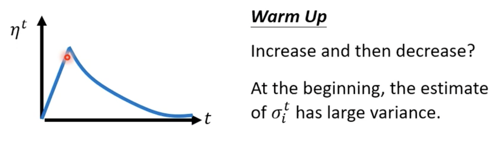
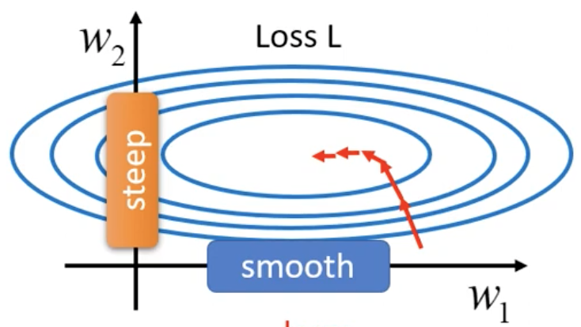

机器学习 by 李宏毅(2)
Adaptive Learning Rate
each parameters different learning rate
Training stuck != Small Gradient
训练过程中，随着不断地update，loss逐渐变小直到不再下降，此时不一定是critical point但gradient不一定很小
gradient 有可能在error surface 来回震荡，loss 不能在下降。
Training can be difficult even without critical points
如图 **Error Surface是convex形状（ Convex Optimization）， 最低点在黄色X处，
lr = 0.01，gradient 震荡，loss无法达到local minima。lr=\(10^{-7}\)，停止震荡但由于lr太小无法到达
Different parameters needs different learning rate
如果在某一个方向上, gradient 的值很小,非常的平坦,那 learning rate 调大一点,如果在某一个方向上非常的陡峭,坡度很大, learning rate 可以小一点
不同的参数我们要给它不同的σ,同时它也是iteration dependent的,不同的iteration也会有不同的σ，σ的计算常见类型
Root mean square (Adagurd)
坡度比较大的时候,learning rate就减小,坡度比较小的时候,learning rate就大
RMSProp
RMS Prop方法,第一步跟oot Mean Square,（Apagrad）一样，但在RMS Prop裡面, 你可以自己调整 gradient 的重要性
α 是一个hyperparameter
- 如果α 很小趋近於0,就代表我觉得gᵢ¹相较於之前所算出来的gradient而言,比较重要**
- α 很大趋近於1,那就代表我觉得现在算出来的gᵢ¹比较不重要,之前算出来的gradient比较重要
原来的Adagrad 相比于 RMSProp 对当前的gradient的反应要慢
Adam
今天最常用的optimization的策略（optimizer），就是Adam：PMSProp+Momentum
Adam VS SGDM
- Adam：fast training，large generalization gap， unstable
- SGDM：stable， little generalization， better convergence
Learning Rate Scheduling
Adagrad
快走到终点的时候突然在纵轴震荡？
纵轴方向,初始的gradient很大
走到谷底,纵轴的方向,gradient算出来都很小,所以纵轴这个方向,就累积了很小的σ，累积到一个地步以后, step 变大,然后就向纵轴偏离
因為偏移出去以后, gradient 变大, σ又慢慢的变大, 参数 update 的步伐就慢慢的变小，所以不会永远就是震荡,不会做简谐运动停不下来,有摩擦力让它慢慢地又回到中间这个峡谷来。
累计一段时间以后周而复始
一个方法可以解决这个问题,叫做learning rate scheduling，不把η当一个常数, 让它跟时间有关最常见的策略叫做Learning Rate Decay，随著时间的不断地进行, 随著参数不断的update, 使η越来越小
Warm Up
让learning rate, 先变大后变小

Summary
- 有Momentum, 现在不是完全顺著 gradient 的方向,现在不是完全顺著这一个时间点算出来的gradient的方向,来update参数,而是把过去,所有算出来gradient的方向,做一个加总当作update的方向,这个是momentum
- update 多大的步伐, 要除掉 gradient 的Root Mean Square
- Momentum是直接把所有的 gradient 通通都加起来, 有考虑方向和gradient正负号，但是 Root Mean Square 不考虑gradient的方向了,它只考虑gradient的大小
Classification as Regression
把Classification,当作是Regression来看输入一个东西以后,我们的输出仍然是一个scaler y，我们要让它跟正确答案越接近越好,但是 y 是一个数字，我们必须把Class也变成数字
假设说Class one就是编号1,Class two就是编号2,Class3就是编号3,意味Class1跟Class2比较像,Class1跟Class3 比较不像,像这样子的表示Class的方式,有时候不可行
Class as one-hot vector
常见的做法是把Class,用 One-hot vector来表示
用One-hot vector来表示的话,就没有Class1跟Class2比较接近,Class1跟Class3比较远这样子的问题,如果计算Class之间的距离 两两它们的距离都是一样。使用one-hot vector，network要Output的维度也是三个数字
Regression的问题,只需要Output一个数字，其实从一个数值改到三个数值,本质上没有什么不同
Softmax（Logistic Regression）
Classification的时候,往往会把y再通过一个叫做Soft-max的function得到y',然后我们才去计算,y'跟y hat之间的距离
Softmax 除了Normalized,让 y₁' y₂' y₃',变成0到1之间,还有和为1以外, 还会让大的值跟小的值的差距更大
然后这个Softmax的输入,往往称之为 logit
两个class 用sigmoid,跟softmax两个class 是等价的
Loss of Classification
- Mean Square Error (MSE)
- Cross-entropy
\[ e =- \sum_{i} \hat{y_i} ln{y_i}' \]
Quick Introduction of Batch Normalization
Error surface 如果很崎嶇的时候,它比较难 train,那我们能不能够直接改变 landscape,让它变得比较好 train 呢？固定的 learning rate,可能很难得到好的结果,所以需要 adaptive 的 learning rate、 Adam 等等比较好的 optimization 的方法,才能够得到好的结果。
假设两个参数啊对 Loss 的斜率差别非常大,在\(w_1\)这个方向上面,你的斜率变化很小,在\(w_2\)这个方向上面斜率变化很大

什么情况会产生像上面这种难 train 的 error surface ？
- \(x_1\) input 中的值都很小，所以输出对y的影响也很小，对Loss的影响也会小
- \(x_2\) 中的值都很大，以输出对y的影响也很大，对Loss的影响也会大
当我们 input 的 feature,每一个 dimension 的值,它的 scale 差距很大的时候,就可能产生像这样的 error surface,就可能产生不同方向,斜率非常不同,坡度非常不同的 error surface
所以可能给 feature不同的 dimension,让它有同样的数值的范围，从而使error surface 更加平坦。这些不同的方法,往往就合起来统称 Feature Normalization
Feature Normalization
对z或者a进行normalization差别不大
如何对z ？ \[ \mu =\frac{1}{3} \sum_{i=1}^{3} z^i \ \ \ \ \ \ \ \ \ \sigma =\sqrt{\frac{1}{3} \sum_{i=1}^{3}(z_i-\mu )^2} \]
所以如果没有 Feature Normalization , 改变了 \(z^1\) 的值, 就会改变 \(a^1\) 的值
但由于 Feature Normalization 是在 dimension 上操作的, 所以当改变\(z^1\)的值的时候, \(\mu 和 \sigma\) 也会跟着改变, \(\mu 和 \sigma\) 改变以后, \(z^2 a^2 z^3 a^3\) 的值,也会跟着改变，三个 example,变得彼此关联。Feature Normalization 的时候, 把这一整个 process,就是收集一堆 feature,把这堆 feature 算出 \(\mu 和 \sigma\) ,当做是 network 的一部分。
实际的数据无法全部放入network中，所以只对一个 batch 中的data 进行 normalization，称为Batch Normalization，适用batch size 比较大的时候, 只有 batch size 比较大,这个 batch size data, 才有可能足以表示整个 corpus 的分布
在 Batch Normalization 的时候,往往还会有这样的设计，算出 $ $ 以后
- 再乘上另外一个向量 \(\gamma\) , 做 element wise 的相乘
- 再加上向量 \(\beta\),得到 \(\hat{z}\) , \(\beta\)和\(\hat{z}\) 是需要 Network learn
让 Network 训练的时候决定feature的平均，而不是限制为0
Testing （ inference）
假如在 testing 的时候,根本就没有 batch,那我们要怎么计算 \(\mu \ \ \sigma\)?
在 training 的时候, 每一个 batch 计算出来的 \(\mu \ \ \sigma\) ,都会拿出来算 moving average
Pytorch 中设置 p 为0.1，testing中直接使用\(\bar\mu\) 和 \(\bar\sigma\)